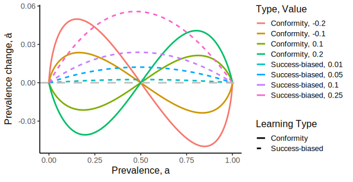

2 Diffusion
Social science can help promote the broad diffusion of sustainable practices including public health, socio-economic equality, climate action, and strong institutions. Conformity is theorized as a social learning strategy in which individuals preferentially adopt behaviors that are more common. Conformity is widely believed to be a “substantial”, if not the primary, driver of human cultural adaptation. Some have recognized that, logically, conformity cannot possibly spark and maintain the diffusion of initially rare adaptations. The full consequences of this are not well understood, however. Here we develop a mechanistic model to compare the strength of adaptation diffusion under conformist and success-biased learning. Success-biased learning uses the success of prospective teachers as a heuristic to choose from whom to learn. It stands in for the suite of uniquely powerful human learning capacities beyond conformity. We prove that success-biased learning always provides stronger evolutionary selection signals and greater success promoting widespread diffusion. Conformity, then, at most could help consolidate already-popular adaptations. Encouraging conformity is a risky strategy, however, since it could reduce openness to novel sustainable practices in general. Sustainability, therefore, will never be promoted by conformity alone. Educational campaigns on the benefits of sustainable practices would be more effective and humane.
2.1 Introduction
Conformity is hypothesized to explain cultural evolutionary, demographic, and political outcomes in humans (Henrich and Boyd 1998; Boyd and Richerson 2005; Richerson and Boyd 2005; Morgan, Suchow, and Griffiths 2020). Conformity has also been recognized as perhaps not the only social learning mechanism that could support human cultural adaptation over time (Borofsky and Feldman 2022), and could possibly cause population collapse under environmental variability (Whitehead and Richerson 2009). Still, conformist transmission seems to be understood as primary, possibly augmented by additional social cues (Gervais 2021), but likely would be undermined by “biased transformation” by more sophisticated cognitive processes (Morgan, Suchow, and Griffiths 2020). Conformity has been identified experimentally as a critical process, but its “strength” seems to depend on the adaptive value, i.e., the difference in benefit between an adaptation and an alternative behavior that could replace the adaptation. Conformity has been reported in bird (Aplin et al. 2015) and . The resulting sigmoidal adoption curves, representing increasing prevalence of an adaptation over time when the adaptation diffuses, is taken as decisive evidence of conformist transmission (Smaldino, Aplin, and Farine 2018), despite critiques of this approach (Acerbi et al. 2016).
We seek to show conclusively that conformity alone cannot initiate and promote the diffusion of adaptive, sustainable practices. We do this by demonstrating that conformity is vanishingly weak at diffusion onset, entering the entrenchment stage where the prevalence approaches half the population, and entrenchment onset when . Some of these facts are already acknowledged, that conformity cannot trigger the onset of endogenous diffusion of a rare adaptation, and has been thus patched with anti-conformity, which is preferring behaviors practiced by less than half of the population (Kaleda Krebs Denton et al. 2020). Furthermore, we know that conformity can undo innovations towards more ergonomic, advantageous adaptations (Morgan, Suchow, and Griffiths 2020), which are just the sort of sustainable practice that is most likely to be transmitted. Anti-conformity has been suggested as a means to promote rare adaptations to spark diffusion onset, however it is unclear how anti-conformity could be switched off to allow adaptations to diffuse throughout the population past the 50% prevalence mark (Kaleda K. Denton, Liberman, and Feldman 2021). Similarly, once the adaptation is practiced by just more than half of the population, with the adaptation on its way to entrenchment where it is practiced by a large majority of the population, should be relatively weak since it is difficult for individuals to sense the true prevalence of different behaviors.
I formalize these arguments using prevalence dynamic, an abstraction of social learning derived from the standard replicator dynamic that can flexibly represent a range of social learning strategies. This framework can be operationalized as difference or differential equations, stochastic dynamical equations in the Kiumura-Crow-Gillepsie tradition, or agent-based models. We use all three approaches to compare the strength of conformity and success-biased learning, where success-biased learning stands in for a range of adaptive learning mechanisms that use reliable cues other than the adaptation prevalence.
I demonstrate that at diffusion onset, when few individuals know a behavior, there is no value of anti-conformity or conformity that can match the strength of selection for success-biased learning. At diffusion entrenchment, when the prevalence goes from less than to greater than half the population, anti-conformity can only weakly get prevalence to 1/2, and conformity can only weakly propel prevalence away from 1/2. Success-biased learning provides stronger selective signals in all three cases. Similarly, finite MCMC calculations of the adaptation success rate
These logical and dynamical problems warrant a revision of the current conformity-centric approach to cultural evolution. These results suggest that success-biased learning should be the focus for interventions to promote sustainable practices, for example, due to the weakness of conformity during critical periods of diffusion. Theoretically, this casts some doubt on the idea that conformity would be selected for when more powerful social learning methods are available, as well as a robust cognitive system for integrating various informational channels and mental computations (Witt et al. 2024).
What originally appeared as modeling patches for artefacts of conformist transmission may in fact be deep theoretical problems with current, vague operationalizations of conformist transmission. This work suggests that current operationalizations of conformity may be illogical, in a technical sense. This cannot be handwaved away. Interestingly enough, it seems conformist tendencies in social science itself to have gotten us to this point where theories and models have proliferated under the common banner of “conformity” but their ontological relationship to one another is uncertain. Even if conformity were a major driver of cultural evolution, it is currently impossible to rigorously and thoroughly evaluate different models and theories of conformity, let alone compare conformity effects with other social learning strategies (Kendal et al. 2018).
2.1.1 Overview
In the remainder of this paper, we operationalize conformity and success-biased learning strategies in terms of the prevalence dynamics. We use a formal differential equation analysis to analyze the relative strength of selection for conformist and success-biased transmission at diffusion onset, when the adaptation is rare, at entrenchment, when the adaptation prevalence passes half the population, and fixation, when the adaptation is adopted by everyone. We then calculate fixation probabilities for different conformity strengths at each of these points in the diffusion for different conformity strengths and learning strategies. Finally, we analyze the dynamics of simulated diffusion in an agent-based social behavior model.
In the next section we introduce the Model formalism: the differential equation formulation, the stochastic fixation probability model, the agent-based model, and our general analytical strategy. Next, we will demonstrate in the Analysis that in many cases, conformity transmission is significantly weaker than success-biased learning, though still could contribute to adaptation if it could be properly controlled and calibrated. We close with our Discussion of why, all together, adaptation diffusion cannot be due to conformity alone.
2.2 Model
To evaluate the strength of conformity compared to success-biased learning, we first specify steps in the learning process as a mechanistic verbal explanation that we represent in a block-and-arrow diagram Figure 2.1. The diagrammatic model describes behavior diffusion as transitions from doing an unsustainable, maladaptive behavior to doing a sustainable, adaptive behavior Figure 2.2. We label the unsustainable, maladaptive, business-as-usual behavior to be the legacy behavior, or just \(L\). One who does \(L\) is an \(L\)-doer. The sustainable behavior is the \(Adaptive\) behavior, or just \(A\). One who does \(A\) is an \(A\)-doer. The prevalence of \(A\) is \(a \in [0, 1]\). The prevalence of \(L\) is just the complement of \(a\), i.e., \(1 - a\).
These transitions drive differential “reproduction” in the cultural evolutionary process. There are three relevant transitions: (1) individuals adopt a behavior an Adaptive behavior, which we call behavior \(A\). We assume there is only one alternative behavior, the Legacy behavior which we label \(L\). An \(A\)-doer is one who has adopted, or does, the \(A\) behavior. Similarly an \(L\)-doer does the legacy behavior. The prevalence of \(A\) is \(a\), and the prevalence of \(L\) is then the complement, \((1-a)\). We prefer the more compact notation \(\dot a\) for the rate of change of \(a\).
As part of this model of behavior diffusion, we name four stages of the diffusion process in which we evaluate the strength of selection with conformity or success-biased learning Figure 2.3. First, diffusion onset, where there are few \(A\)-doers so \(a << 1\). After the adaptation has spread so that \(a << 1\) is no longer valid there is the Entrenchment transition where the prevalence crosses half the population, i.e., from a minority of the population adopting \(A\) to a majority adopting. There are two parts to Entrenchment, the Entrenchment Approach stage, where the prevalence is approaching \(a = 0.5\), and the Entrenchment Onset stage, where prevalence begins increasing from \(a = 0.5\). The final stage is Fixation, where the behavior is reaching eveyrone in the population, i.e., \(a \to 1\).
We then formulate a differential equation of the model that we call the prevalence dynamic. We obtain the prevalence dynamic by rewriting the evolutionary replicator dynamic in terms of behavior transitions. Behavior diffusion is an evolutionary process since one behavior out of a set of options will be learned by more people than others, i.e., it is spread through differential replication/reproduction. We use the prevalence dynamic version of the replicator dynamic because replication or reproduction are oblique metaphors for social learning. We are interested in changes in the prevalence of behaviors, not their reproduction, per se, in social diffusion. Implicitly, the replicator/prevalence dynamics assume a well-mixed population, which means every agent is equally likely to partner with any other. The population is also assumed to be so large that it is effectively infinite, but nonetheless individuals reliably sample according to the specified learning rules without error.
Next, we develop a stochastic prevalence dynamic in a Kimura-Crow style model that accounts for randomness in social interactions in finite populations. This enables us to calculate the probability of fixation of the adaptive behavior, i.e., the probability that all individuals adopt the adaptive behavior via social diffusion. This can be used to show that conformity (or anti-conformity) alone can sometimes result in fixation, but success-biased learning more frequently leads to adaptation fixation.
Finally, we develop an agent-based model to evaluate our formal conclusions both about dynamics and success rates for different initial prevalence values. This enables us to get a more grounded understanding of how stochasticity and drift affect dynamics and outcomes.
2.2.1 Prevalence Dynamic
The prevalence dynamic expresses change in prevalence in terms of transition probabilities representing the chance that the learning process causes one \(L\)-doer to swtich to be an \(A\)-doer, and vice-versa. The transition probability of \(L \to A\) is \(P(A|L)\). The transition probability of \(A \to L\) is \(P(L|A)\). We will derive the prevalence dynamic from the replicator dynamic.
The replicator dynamic is \[ \dot a= \frac{a}{\bar w}(w_A - \bar w). \tag{2.1}\] If we multiply through we get \[ \dot a= \frac{a w_A}{\bar w} - a. \] Note that \(w_A / \bar w\) is the per-capita “reproduction rate” of behavior \(A\) when \(A\) competes with \(L\) for prevalence, where \(\bar w = a w_A + (1 - a) w_L\). Therefore, \(\frac{a w_A}{\bar w}\) is the total prevalence of \(A\) on the next time step. It is equivalently the probability that any one individual will adopt or keep \(A\) on the next time step. We write this \(P(A)\), and obtain our prevalence dynamic, \[ \dot a= P(i \text{ does } A \text{ at } t + dt) - a, \]
Where \(i\) could be any individual in the population. Defining \(p_A = P(i \text{ does } A \text{ at } t + dt)\), we have \[ \dot a= p_A - a. \tag{2.2}\] This makes sense: the change in prevalence is the prevalence for the next time step minus the current prevalence.
Conformity Prevalence Dynamic
We can use Equation 2.2 directly to write down the conformity prevalence dynamic. In conformity, at each time step individuals adopt a new behavior based on the rule that says more prevalent behaviors are more likely to be adopted compared to less prevalent ones. In that case we have \[ P(A; \kappa) \propto a^{\kappa} \] where \(\kappa\) is a measure of the conformity strength. We’ll set \(\kappa\) in a moment, but first we need to normalize this proportional term. Before that, note \[ P(L; \kappa) \propto (1-a)^\kappa. \] Note that \(P(A) + P(L) = 1\), and so we must normalize by each proportionality and we get \[ P(A) = \frac{a^\kappa}{a^\kappa + (1-a)^\kappa} - a. \]
Neutral selection (neither anti-conformity or conformity) occurs when \(\kappa = 1\), since \[ \dot a= \frac{a}{a + 1 - a} - a = 0 \] for any \(a\) when \(\kappa = 1\). For a more natural value for conformity, let \(\kappa = 1 + \gamma\), so \(\gamma = 0\) is the neutral point instead. Then we get anti-conformity when \(\gamma < 0\), conformity when \(\gamma > 0\), and neutral selection with null dynamics when \(\gamma = 0\). With this definition, the full conformity prevalence dynamic is \[ \dot a= \frac{a^{1 + \gamma}}{a^{1 + \gamma} + (1-a)^{1 + \gamma}} - a. \tag{2.3}\]
Success-biased Prevalence Dynamic
Success biased learning specifies that the probability of adopting the adaptive behavior is proportional to the both the fitness of the behavior and the prevalence of \(A\)-doers who can act as teachers/demonstrators for \(L\)-doers. Therefore we write \[ P(A) \propto a f_A \] Again since \(P(A) + P(L) = 1\), and \(P(L) \propto (1 - a)f_L\), then the normalization constant for \(P(A)\) is the sum of the two proportional terms, so
\[ P(A) = \frac{a f_A}{af_A + (1-a)f_L}. \] The denominator is actually the mean fitness, so we define \(\bar f = af_A + (1-a)f_L\) and we obtain \[ \dot a= \frac{af_A}{\bar f} - a = \frac{a}{\bar f}(f_A - \bar f). \] When we use success-biased learning we obtain the replicator equation but with fitness replacing reproduction rate! Oftentimes this is assumed instead of derived without derivation, based on a circular definition of “fitness” as being measured in terms of reproduction rates.
To simplify things, we can set the baseline legacy fitness to be \(f_L = 1\) without loss of generality and set \(f_A = 1 + s\), so that \(s\) represents the selection pressure towards adopting \(A\). Then we have \[ \bar f = a(1 + s) + (1 - a) = 1 + as. \] Then the prevalence dynamic becomes \[ \dot a= \frac{a(1-a)s}{1 + as}. \]
2.2.2 How to compare different learning processes
One problem with comparing different theoretical learning processes is that they use different parameterizations that are difficult to match to real-world situations, much less be compared to one another. To deal with this problem, we use a pair of mathematical procedures to understand how the strength of selection relate to one another, independent of the exact parameterizations. These procedures are common in both dynamical systems and evolutionary theory to achieve exactly this sort of goal: understand in a parameter-agnostic way how variables change with respect to one another in a rigorously qualitative way. I explain further below how this works. If it is still not clear after that explanation, it will hopefully become clear when it is applied to our case of interest. The first procedure is to focus
The limiting cases we focus on here are defined in terms of the prevalence, \(a\), approaching or being slightly greater than some reference value. Our reference values are related to the onset, entrenchment, and fixation ontology of behavior diffusion Figure 2.3. The first limiting case is when \(a << 1\), or equivalently \(a \approx 0\). In evolutionary theory this is called invasion analysis, but we break for onset analysis in the interest of a more exact, less insular phrase for behavior diffusion and to develop a more humane ontology than what we’ve inherited from behavioral and social science terminology developed in the context of the Red Scare and the Cold War, motivated by a glut of defense department funding. The second limiting case is when \(a \to 0.5^-\), read as a goes to 0.5 from below, i.e., from less than 0.5 to 0.5. This will let us compare the strength of conformity and success-biased learning in entrenchment , a critical period where social momentum can be the difference between successful and failed adaptation diffusion. The entrenchment onset is similarly important, when \(a = 0.5 + \epsilon\) and \(\epsilon \to 0\), read “epsilon goes to 0”. This procedure allows us to compare the strength of selection at the critical point when just more than half of the population does \(A\), and successful diffusion is in sight. Finally, when \(a\) approaches 1, this is the fixation phase.
Once the limiting case is identified, we can obtain simplified forms of the prevalence dynamic by removing terms in the dynamic that are small enough to be ignored. In some cases we can do this directly. For example, \(1 - a \approx 1\) when \(a\) is small. For instance, if \(a=0.05\), then \(1 - a = 0.95\), yielding an error in the approximation of 5%. In other cases, we can harness a more advanced tool from calculus, the Taylor expansion, that can be used to approximate differentiable functions, meaning their derivatives are defined and finite for any input value to the function.
Taylor expansion
The Taylor expansion represents a function, call it \(f(x)\), as an infinite sum…
2.2.3 Fixation probability
2.2.4 Agent-based model
Agent-based models enable the transparent specification of individual-level attributes and interaction structure. We will develop an agent-based model of behavior diffusion based on . confirm results from the two formal analyses of diffusion rate \(\dot a(a_0)\) and the success rate \(\sigma(a_0)\).
2.3 Analysis

2.3.1 Strength of conformity over stages of diffusion
Onset
Entrenchment Approach
Entrenchment Onset
2.3.2 Fixation probability over stages of diffusion
2.3.3 Simulations confirm both strength of conformity and fixation probability
2.4 Discussion
Perhaps anti-conformity could provide a boost for stimulating diffusion onset, and conformity could support the final stages of diffusion when behavior prevalence is well past half the population. However, it is not clear what sort of meta-learning strategy could cue individual-level switching between anti-conformity and conformity, especially near the entrenchment stage where about half the population has adopted the behavior and confusion reigns, which is predicted to induce chaotic oscillatory dynamics around parity prevalence (Kaleda K. Denton, Liberman, and Feldman 2021).